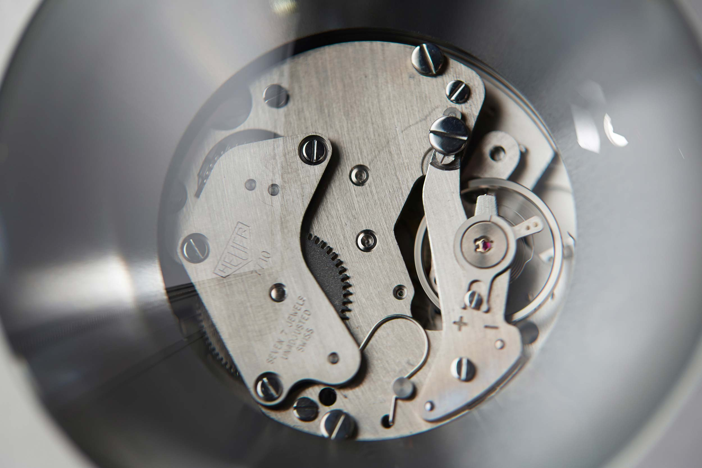

Galerie Anhava
Helsinki
2016
Wanderer of Gravity
Aluminium wheel, wire, coil springs, attachments, electric actuator, aluminium baseplate with counterweight,
steel joints, strain gauge, control unit, power supply
Two parallel steel wires approximately 30 cm apart are stretched diagonally across the exhibition space. An
aluminium wheel with a steel axle moves back and forth along the wires. Attached to the middle of these
horizontal wires is a pair of vertical wires connected to an electric actuator on a heavy platform on the
floor. When the actuator pulls on the vertical wires, bending the horizontal wires downwards, the wheel begins
to roll towards the middle of the room. When it rolls over the midpoint, a sensor - a strain gauge
- detects it and the actuator slowly releases the vertical wire. The coil springs at the ends of the
horizontal wires pull them straight, making it easy for the wheel to carry on moving towards the other corner
with the momentum it has acquired earlier by rolling downhill. When it finally stopps, the sensor detects
this, the actuator pulls the middle of the horizontal wires down again, and the wheel begins moving downhill
in the opposite direction from before.
Restless Horizon
Acrylic aquarium, distilled water, silicone oil, aluminium stand, bearings, attachments, electric actuator,
limit-switches, control units, power source
A large acrylic aquarium is filled to the brim with half distilled water and half transparent silicone oil.
Because silicone oil is less dense than water and they are immiscible, the oil floats on top of the water with
a transparent, but clearly visible borderline between them. An electric actuator operated by limit switches
and a control unit slowly tilts the aquarium back and forth, creating visible wave patterns at the boundary
between the two liquids. The high viscosity of the oil makes the movement of the waves slow and dreamlike.
2,4 x 0,85 x 0,24 m
Helsinki Beat Frequency
Analogue sine-wave oscillators, subwoofers
Two sine-wave oscillators emitted two slightly different low frequencies through two subwoofers in an old
industrial space. The interference caused by the difference between these two frequencies generated a third,
pulsing sound in the space. This very low frequency was adjusted so that it resonated with the space, creating
what are known as standing sound waves at certain points in the space. This made visiting the work extremely
physical, spatial, site-specific experience.
dimensions variable
Kylmäkalle / Frozen Cube
Cubic stainless-steel container, frozen gel
A cubic stainless-steel container is filled with frozen gel. It is then kept in a freezer overnight and
displayed on a pedestal during the day, when the exhibition is open. The moisture in the air of the exhibition
space condenses onto the cold surface of the artwork. Because it is highly polished, and hence hydrophobic,
the water tends to condense on it in droplets. The surface of the work, which is otherwise reminiscent of a
minimalist sculpture, is in a constant state of slow transformation, first freezing and then melting.
0,2 x 0,2 x 0,2 m
Espoo Underground
Bedrock samples, wooden crates, timber
The work consists of roughly one kilometre of bedrock samples collected for building the new metro line from
Helsinki to Espoo. The samples are precisely marked, packed in wooden crates and given a code that indicates
their place of origin. The sample crates are stacked as if in normal storage, except for the pieces of timber
between them, which makes it possible to examine the contents of the boxes in greater detail. The immersive
artwork deals with the idea of an archive, an invisible infrastructure, the relativity of different timespans,
and the sheer presence of four tonnes of stone. The work is accompanied and accentuated by the low-frequency
tones of the Helsinki Beat Frequency sound installation in the next room.
Dimensions variable
Perspective Study
Analogue colour photograph, oak frame with passepartout, steel frame on stand
The staged photograph is one of a small series shot in Tallinn in 2015, inspired by the 1980's site-specific
work of the Estonian artist/architect Jüri Okas. We visited his home and some of the sites of his works during
the process of making the artwork. The series of pictures is a continuation of the works in which, instead of
working in an institution or public space easily reachable by the public, we choose a site that interests us,
make our intervention, and document it with a photograph. Because the object is only experienced from a single
point, through the camera lens, it raises questions about whether it or the photograph is the actual artwork.
It is essential to use analogue photography here, as it emphasizes the authenticity of the picture.
Homage to Jüri Okas
Perspective Study I
Perspective Study II
Perspective Study III
Perspective Study III in exhibition
Large Movement
Stop watch movement, stainless steel, glass
13 x 13 x 6 cm

Color Mixer
3,0 x 1,4 x 0,6 m